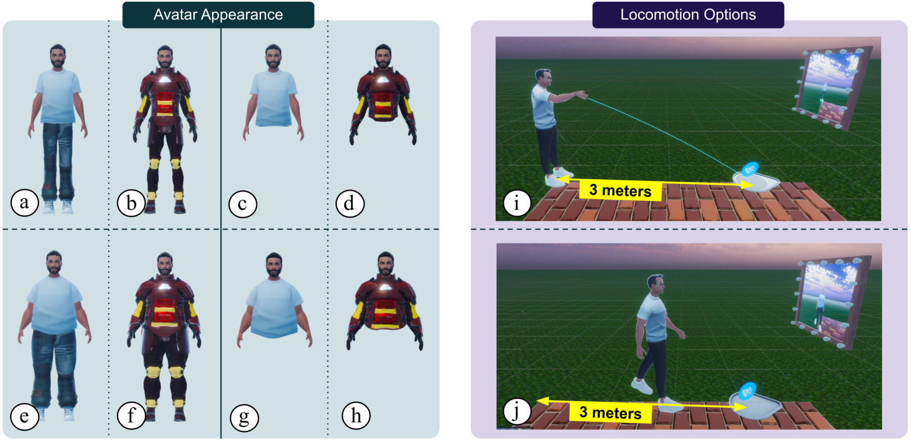

Abstract
Room-scale locomotion in VR can promote physical movement to combat the negative effects of a sedentary lifestyle. Therefore, it is useful to investigate factors which may motivate users to walk instead of teleport. In a within-subjects study with 24 participants, we investigated the effects of avatar appearance and target distance on users' locomotion behavior, when given the option to either walk or teleport. In particular, we manipulated three aspects of avatar appearance—body completeness (full-body vs upper-body only), body weight (normal vs obese), and clothing (casual vs superhero armor), and we provided three target distances (1.5 meters, 3.0 meters, and 4.5 meters). We found that avatar obesity decreased willingness to walk, but only for full-body avatars. We also found that close target distances encouraged more walking than teleporting, up to a certain threshold distance. Additionally, we found that users' perceived similarity to their avatar correlated with their willingness to walk. Our findings can be applied to motivate users to walk more in VR, such as in VR exergames.